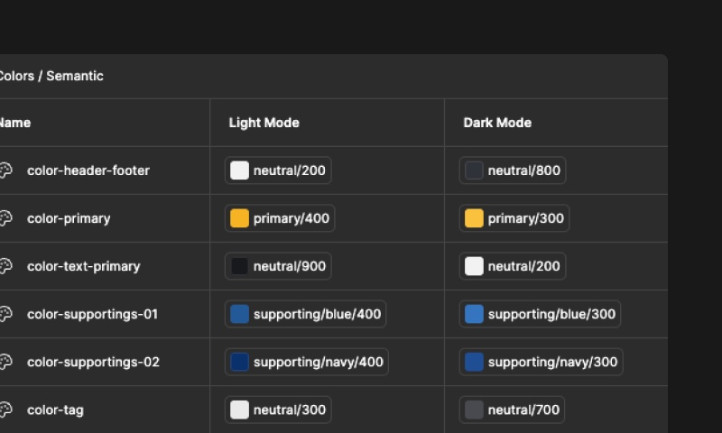
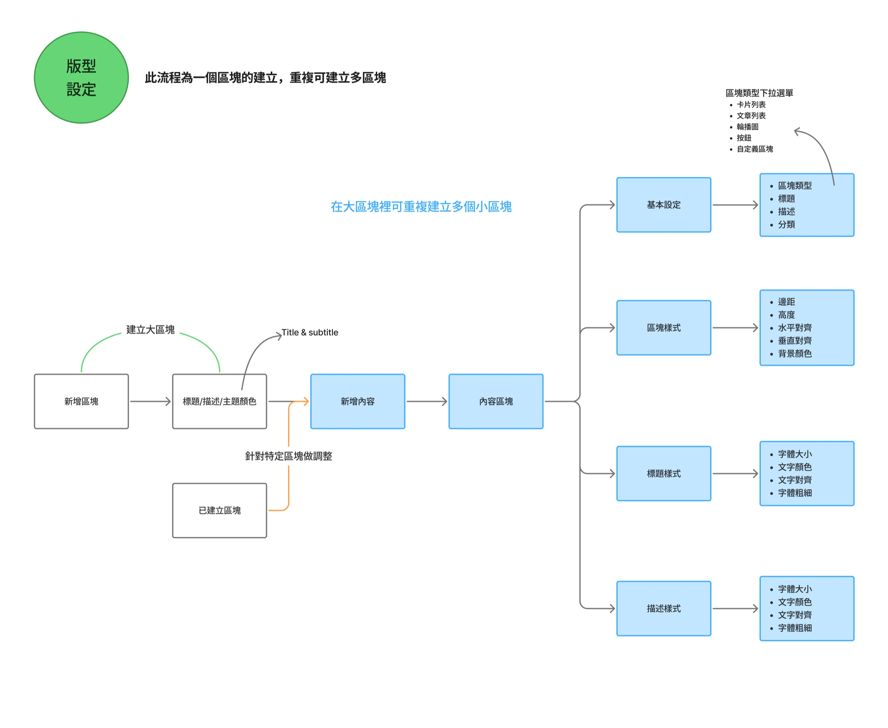

2025年8月
模組化賽事管理系統：足球資訊網站設計
專案概覽 Project Overview
成果展出
透過前期建立的模組化 Design System，團隊成功將同一套設計架構延伸至另外兩個不同類型的網站（電商平台與新聞網站）。藉由共用元件與 Figma Variables 管理不同視覺 Mode，降低重複設計成本，並提升設計的一致性與擴充效率。
我的角色
負責前期資料蒐集、整體 UI/UX 設計與 Design System 規劃。此外，也與工程師合作測試 AI 輔助開發的後台介面，從使用者角度檢視內容建立、區塊配置與發佈流程，協助優化操作體驗。
專案挑戰
如何建立一套能同時滿足前台閱讀體驗與後台內容管理需求的模組化架構。除了掌握足球賽事專欄的資訊層級與頻繁更新特性，也需要考量不同頁面版型的延展性，讓設計能有效對應後台的區塊化管理方式。
團隊目標
建立以模組化 Design System 為核心的足球資訊網站，串接前台視覺呈現與後台區塊化內容管理，讓設計架構能重複應用、靈活調整，並延伸至不同類型的網站。
設計流程 Design Process
- 需求定義
專案兼顧前台體驗與後台高度自主性。我們建構了一套靈活的後台管理系統，讓客戶能輕鬆掌握前台內容更新與網站配置。
- Design
為提升網站的維護效率與擴充性，本專案採用模組化設計，建立可自由組合與配置的區塊組件，讓客戶能透過後台靈活打造多樣化的網頁版型。同時運用 Figma Variables 支援 Light / Dark Mode 切換，突破傳統賽事網站的視覺框架，兼顧沉浸式體驗與不同光線環境下的資訊易讀性。
設計目標 Design Approach
以足球賽事為主題，一次探索 Design System 與 AI-assisted Development 的團隊實驗。考量到品牌後續的擴充需求，我們採取「區塊化」的設計策略。
1專案模組化與橫向擴張
運用模組化的架構為設計主要目標，希望往後能快速延伸並啟用在其他專案。考量到擴充的產業性質不同，希望能做出中性視覺保有客戶彈性調整的平台。
2製作可直接上線使用的前台網頁設計
透過分析其他運動賽事的資訊網站，確保涵蓋基本功能與內容結構。客戶希望有一套具備完整功能與良好可讀性的前台介面，讓他們可立即投入實際營運的網站。
設計執行 Design Execution


1前台展示
前台以手機閱讀情境為主要設計對象。首頁由多個內容區塊組成，例如本日焦點、球星導讀、足壇熱點、熱門主題與足球冷知識，每個區塊都對應後台的一種區塊類型（卡片列表、文章列表、輪播圖），客戶可以依需求調整順序與內容。
文章卡片統一採用「圖片＋標題＋摘要＋標籤」的結構，讓不同區塊的內容維持一致的閱讀節奏。右上角可隨時切換 Light / Dark Mode，長頁面則提供回到頂端的按鈕，讓使用者瀏覽大量賽事內容時也能輕鬆操作。
2後台編輯器介面邏輯
除了前台介面設計外，我也參與後台操作流程的優化。由於後台系統透過 AI 協助開發，初期流程與實際使用情境仍有調整空間，因此我從前台使用脈絡出發，協助檢視後台操作邏輯，調整不直覺的流程節點，讓內容管理與前台呈現之間能維持一致且可預期的使用體驗。


點擊圖片可放大